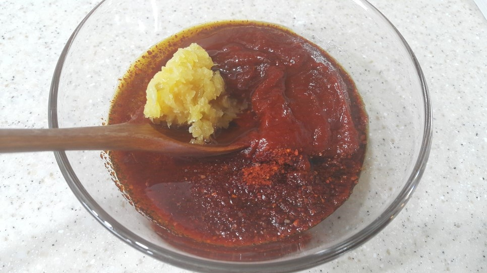
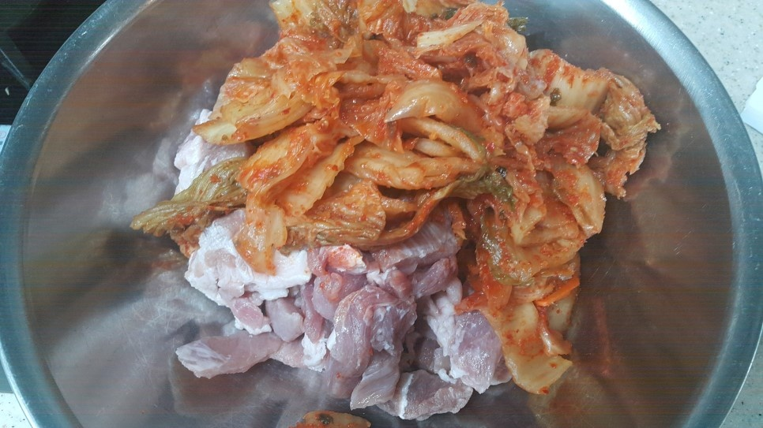
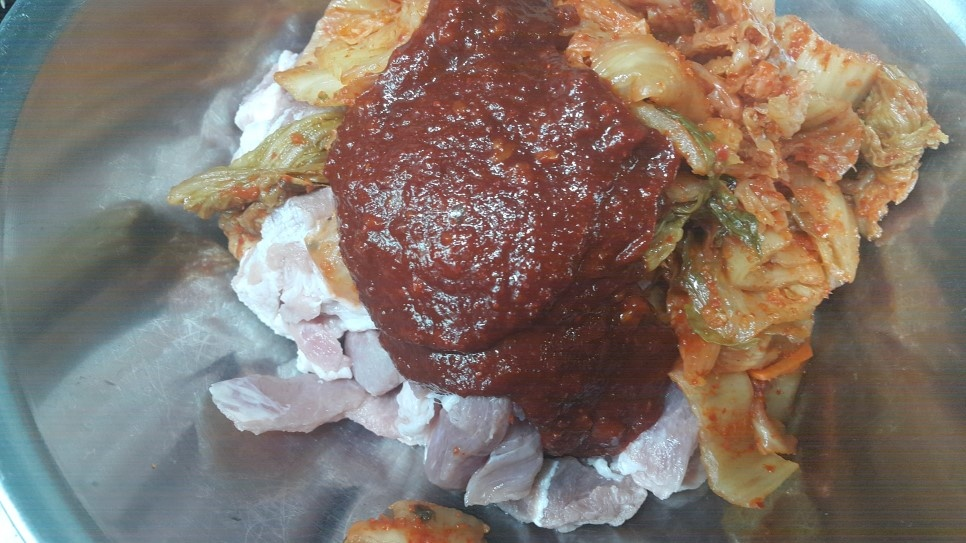
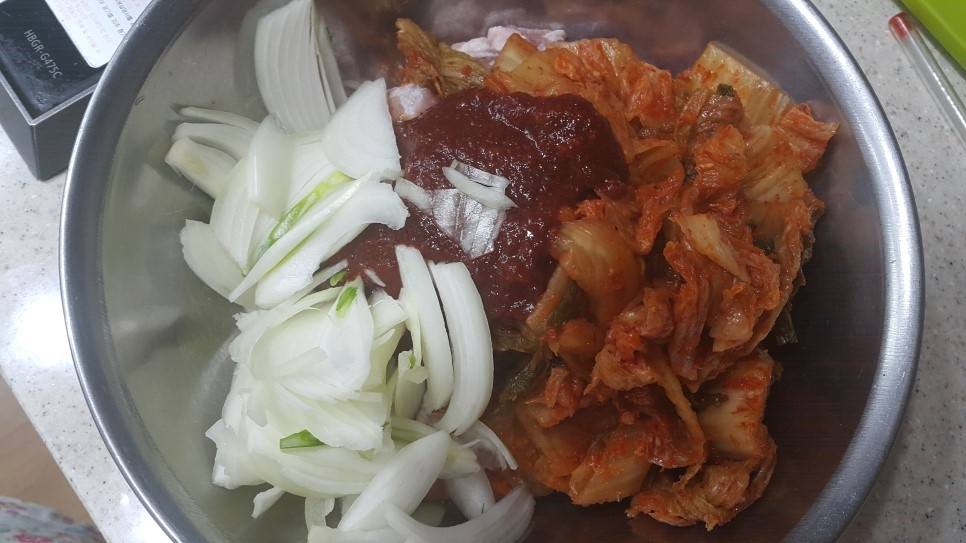
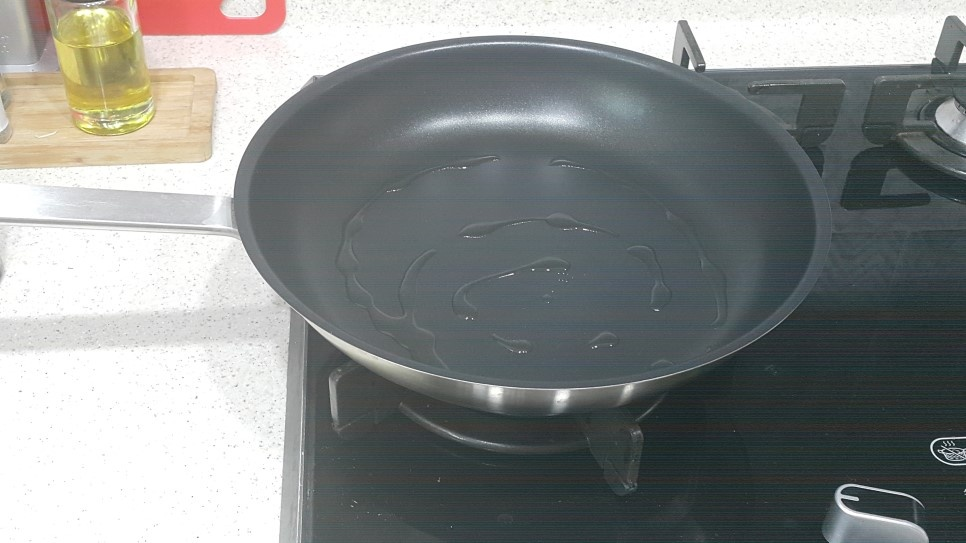
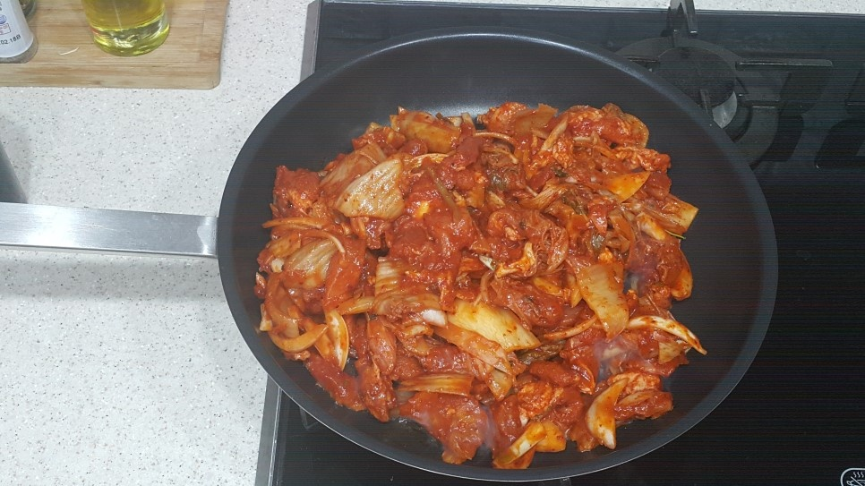
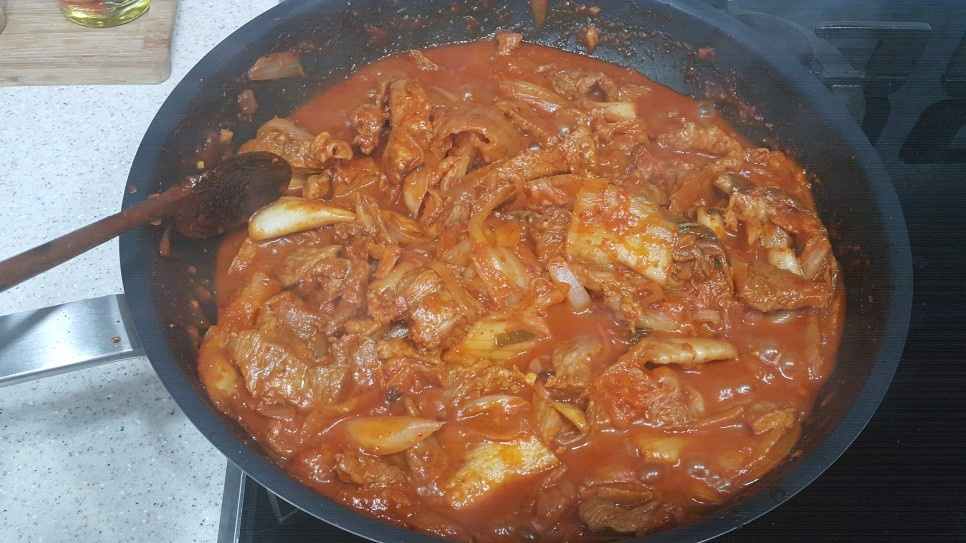

김치제육볶음
요즘 미세먼지 때문에 참 신경 쓰이시죠!!! 마스크 챙기기도 쉬운 일이 아닙니다 다이어트를 포기한 남편이 미세먼지 때문에 돼지고기를 먹어야겠답니다^^;;ㅋㅋ 삼겹살도 아니고 김치 많이 넣은 제육볶음으로다가!!!!!
조리시간 : 30분 이내
재료
- 재료
돼지고기 600g
김치 600g
양파 1개
대파 1개
설탕 1큰술
식용유
- 제육볶음 양념
고추장 2큰술
고춧가루 2큰술
물엿 또는 설탕 2큰술
간장 2큰술
맛술 1큰술
다진마늘 1큰술
후추 약간
조리 순서
| 1. 분량의 양념 재료를 잘 섞어서 준비합니다 김치가 들어가니 양념은 약간 달달한 맛이 좋습니다 집마다 고추장 맛과 간장 염도가 틀리니 약간만 달달하게 양념을 만들어 주면 아주 맛 좋은 김치 제육볶음을 드실 수 있답니다 |  |
| 2. 김치는 설탕 1 큰 술을 넣고 무쳐 준 뒤 10분정도 두면 신맛이 덜해지고 김치가 더 맛있어져요 |  |
| 3. 고기와 김치 양념을 넣고 양파도 한 개 썰어서 넣어줍니다 |  |
| 4. 청양고추도 넣어 주면 좋은데 똑 떨어져서~~ 있으면 몇개 넣어 주세요^^ |  |
| 5. 팬에 기름을 넉넉히 둘러줍니다 |  |
| 6. 달구어진 팬에 모든 재료를 넣고 휘리릭 볶아요!!! 그냥 막 볶으면 되지요~~~^^ |  |
| 7. 물도 조금 넣고 볶다가 청양고추와 대파로 색을 더해 주면 되는데요... 물이 졸아들 때까지 볶아주면 맛있는 김치 제육볶음 끝!!!!! |  |